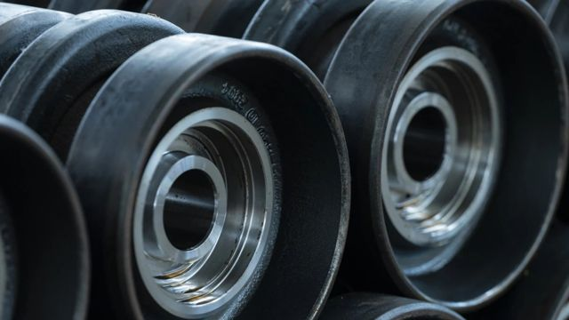
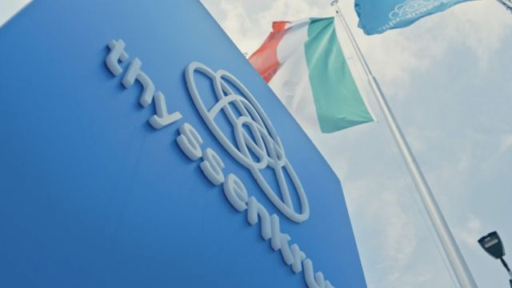
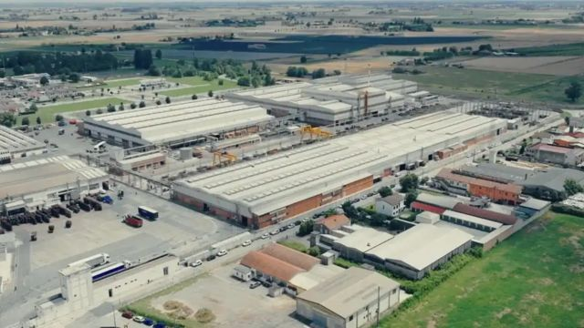

Berco в Казахстане ищут ~50 раз в месяц
Прогноз Яндекса по Казахстану, показов в месяц. Бренд пока почти не знают, поэтому одного поиска мало — нужна РСЯ, чтобы бренд увидели.
Брендовые запросы
| Фраза | показов/мес |
|---|---|
| берко | 25 |
| berco | 18 |
| berko | 6 |
| бэрко | 2 |
| berco купить | 2 |
| аналог ходовой | 15 |
| ходовая аналог | 15 |
Аудитория для РСЯ (Б2)
| Фраза | показов/мес |
|---|---|
| komatsu | 1161 |
| caterpillar | 1079 |
| гусеничный экскаватор | 448 |
| гусеничный бульдозер | 68 |
| hitachi экскаватор | 66 |
| экскаватор komatsu | 65 |
| карьерный экскаватор | 56 |
| бульдозер komatsu | 42 |
| экскаватор caterpillar | 30 |
| бульдозер caterpillar | 13 |
Б1 · поиск по бренду и Б2 · знакомство с брендом
Все ссылки ведут на страницу /berco — про производителя, историю с 1920 года и thyssenkrupp. Объявления показаны в том виде, в каком они сохранены в Директе.
Поиск · Бренд Berco
Человек уже знает Berco и ищет, где купить. Самые тёплые запросы и самый дешёвый клик. Заменяет К5 из основной РК — шире по написаниям бренда.
Berco — латиница20 показов/мес в поиске · 9 фраз · 3 объявл./berco
Берко — кириллица и опечатки33 показов/мес в поиске · 6 фраз · 2 объявл./berco
Аналог оригинальной ходовой15 показов/мес в поиске · 4 фраз · 2 объявл./berco
РСЯ · Знакомство с брендом Berco
Про Berco в Казахстане мало кто знает — бренд ищут ~50 раз в месяц. Показываем объявления с фото завода и ходовой тем, кто интересуется CAT, Komatsu, Hitachi и гусеничной техникой. Цель — чтобы при замене ходовой вспомнили Berco.
Ключевые фразы: марки и гусеничная техника3028 показов/мес в поиске · 10 фраз · 3 объявл./berco



Общий лимит остаётся 35 000 ₸ в неделю
- Б1 заменяет К5 из основной РК: те же запросы про Berco, но больше написаний (берко, бэрко, berko) и группа «аналог ходовой». К5 в кабинете не создавал, чтобы фразы не конкурировали между собой.
- Б2 — 5 000 ₸ в неделю. Их взял из РСЯ К7: в кабинете у К7 стоит 16 500 ₸ вместо 19 000.
- К8 (ретаргетинг) пока не создан — ему нужна аудитория Метрики «были на сайте» (см. раздел 05). Когда добавим, его 3 000 ₸ тоже возьмём из К7.
- Сейчас в кабинете: поиск 13 500 ₸ + РСЯ 21 500 ₸ = 35 000 ₸ в неделю.
Что уже создано (13.11)
Логин mpg.amm.ct. Все новые кампании — черновики: не отправлены на модерацию и не тратят деньги. Старая «Единая перфоманс-кампания №1» (715120629) не изменялась.
| Кампания | ID | ₸/нед | групп | фраз | объявл. | статус |
|---|---|---|---|---|---|---|
| Б1 · Поиск · Бренд Berco | 716209210 | 1 500 | 3 | 19 | 7 | черновик |
| Б2 · РСЯ · Знакомство с брендом Berco | 716209578 | 5 000 | 1 | 10 | 3 | черновик |
| К1 · Поиск · Ходовая по типу техники | 716209284 | 2 500 | 5 | 30 | 10 | черновик |
| К2 · Поиск · Узлы ходовой | 716209346 | 2 500 | 6 | 35 | 12 | черновик |
| К3 · Поиск · Ходовая по бренду техники | 716209397 | 1 500 | 6 | 40 | 12 | черновик |
| К4 · Поиск · Карьерные модели | 716209454 | 1 500 | 10 | 47 | 20 | черновик |
| К6 · Поиск · Запчасти спецтехники | 716209538 | 4 000 | 2 | 13 | 4 | черновик |
| К7 · РСЯ · Ходовая для спецтехники | 716209592 | 16 500 | 1 | 8 | 2 | черновик |
| Итого | 35 000 | 34 | 202 | 70 |
Настроено в каждой кампании
- Казахстан, Пн–Пт 8:00–21:00 (100%), Сб–Вс 10:00–18:00 (50%), время Алматы
- Стратегия «Максимум кликов» с недельным бюджетом и потолком цены клика
- Метрика 110341229 и цели: отправка формы, клик по телефону, мессенджер, контактные данные
- Минус-слова аккаунта (авто, ремонт, китайская техника и др.) + минус-слова групп
- UTM-метки, быстрые ссылки, уточнения, мобильные −50%
- В РСЯ — 3 картинки с сайта berco-mpg.com, обрезаны до 16:9
Что изменилось в Директе и как я это учёл
- Второго заголовка больше нет. Директ создаёт объявления только «комбинаторными»: второй заголовок приклеивается к первому, если оба влезают в 56 знаков, иначе отбрасывается. Превью на страницах показывают объявления уже в таком виде.
- В поиске автотаргетинг нельзя выключить. Оставил только «целевые запросы», остальные категории выключены. В РСЯ автотаргетинг остановлен.
- Символ «·» в текстах запрещён — заменил на запятые.
Что нужно для запуска
- Ваше «да» на модерацию и запускОтправлю все 8 кампаний на модерацию. После одобрения включаем новые кампании, а старую оставляем выключенной. Удалять её не будем — она нужна для сравнения.
- Интересы в К7Через API доступны только интересы мобильных приложений, про спецтехнику там ничего нет. Сегменты «спецтехника / стройка / добыча» добавлю в интерфейсе Директа.
- К8 · ретаргетингНужен сегмент Метрики «посетители berco-mpg.com за 30 дней без заявки». Создам его в Метрике и добавлю кампанию.
- ВизиткаАдрес, телефон и часы работы к объявлениям ещё не добавлены — пришлите актуальные данные.
- ЧТЗ / Т-130 / Т-170Остаются в минус-словах групп про бульдозеры, пока вы не скажете иначе.